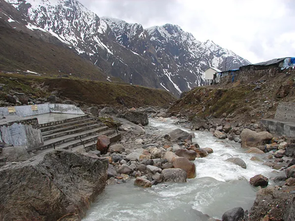
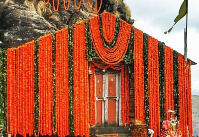

Haridwar - Guptkashi (220kms/8-9hr) Height: 1319 MTS. The morning after breakfast, drive to Guptkashi via Rudraprayag & Devprayag. Enroute you can see the beautiful river Mandakini at Tilwara. The Mandakini river comes from Kedarnath, drive alongside the river to reach Guptakashi, visit Ardh Narishwar Temple in Guptakashi. Check into the hotel in Guptakashi. Overnight stay at Guptakashi. Guptakashi:- The name Gupt Kashi means "Hidden Benares. Mythology describes how when the Pandava brothers were searching for a glimpse of Shiva, Shivji first concealed himself at Guptkashi, but later fled from them further up the valley to Kedarnath, where the Pandavas finally got their wish fulfilled. There are more tangible connections as well-the Kedarnath pandas (priests) live in Guptkashi during the winter months, and after the Kedarnath temple closes for the winter, the image of Kedarnath passes through Gupt Kashi on its way to Ukhimath (across the valley), where it stays for the winter.
Day 2

Guptkashi - Kedarnath - Guptkashi (30kms by road & 19kms Trek one way) Height: 3384 MTS. The morning after breakfast drive to Gaurikund, start your trek from Gaurikund to Kedarnath (by Pony / Doli / Helicopter at your own cost). Visit Kedarnath Temple. After temple Darshan trek down to Gaurikund. Later, drive to Guptkashi. Overnight stay at Guptakashi. Kedarnath: The Kedarnath shrine, one of the 12 jyotirlingas of Lord Shiva, is a scenic spot situated, against the backdrop of the majestic Kedarnath range. Kedar is another name of Lord Shiva. According to legend, the Pandavas after having won over the Kaurava in the Kurukshetra war felt guilty of having killed their own brothers and sought the blessings of Lord Shiva for redemption. He eluded them repeatedly and while fleeing took refuge at Kedarnath in the form of a bull. On being followed he dived into the ground, leaving his hump on the surface. The remaining portions of Lord Shiva appeared at four other places and are worshipped there as his manifestations. The arms appeared at Tungnath, the face at Rudranath, the belly at Madhmaheshwar and his locks (hair) with the head at Kalpeshwar. Kedarnath and the four above-mentioned shrines are treated as Panch Kedar.
Day 3

Guptkashi - Haridwar (165kms/5-6hr) The morning after breakfast, drive for Haridwar via Rishikesh. Rishikesh's place of sages is a celebrated spiritual town on the bank of Ganga and is surrounded by the Shivalik range of the Himalayas on three sides. It is said that when Raibhya Rishi did hard penances, God appeared by the name of " Hrishikesh " and this area hence firth came to be known as Rishikesh. Check-in Hotel. Later visit Rishikesh Temples & Sight Seeing – Laxman Jhulla, Ram Jhulla. Drop at Haridwar. Rishikesh: Named after the Lord Vishnu, Rishikesh is a holy city for Hindus. Located in the foothills of the Himalaya in northern India it is also known as the yoga center of the world and is home to many world-renowned ashrams. Rishikesh styles itself as the ‘Yoga Capital of the World’, with masses of ashrams and all kinds of yoga and meditation classes. The fast-flowing Ganges is surrounded by forested hills inside the city. Apart from temples and ashrams, Rishikesh is now a popular white-water rafting center, backpacker hang-out, and gateway to treks in the Himalaya.